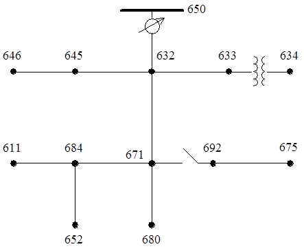

Date of Publication:
2016-05-31Version Information:
1.00Model Accessibility:
Proprietary Documentation:
Public info enough for model modifications. No proprietary information required.Model Symbol:
Accreditation:
TRL 3Type/Category of Model:
Brief Theoretical Background:
This circuit model is very small and is used to test common features of distribution analysis software, operating at 4.16 kV. It is characterized by being short, relatively highly loaded, a single voltage regulator at the substation, overhead and underground lines, shunt capacitors, an in-line transformer, and unbalanced loading. Model is built using RSCAD® and is suitable for steady-state and dynamic simulations.Model Specifications:
Model Dependencies:
Interfacing Information:
Diagrammatic Representation:
Interfacing Capabilities for HIL Simulations:
Not present in current model. I/O signal scaling required.